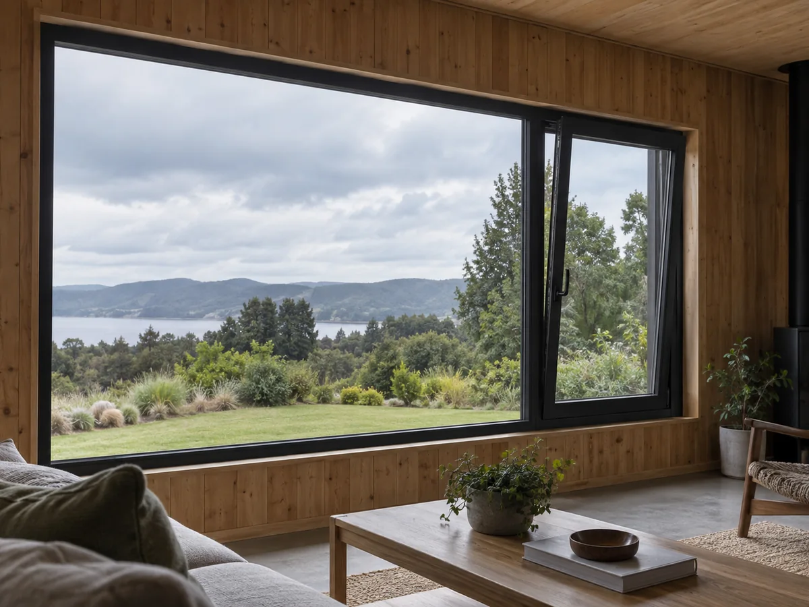
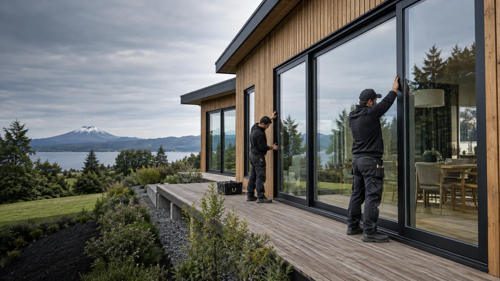
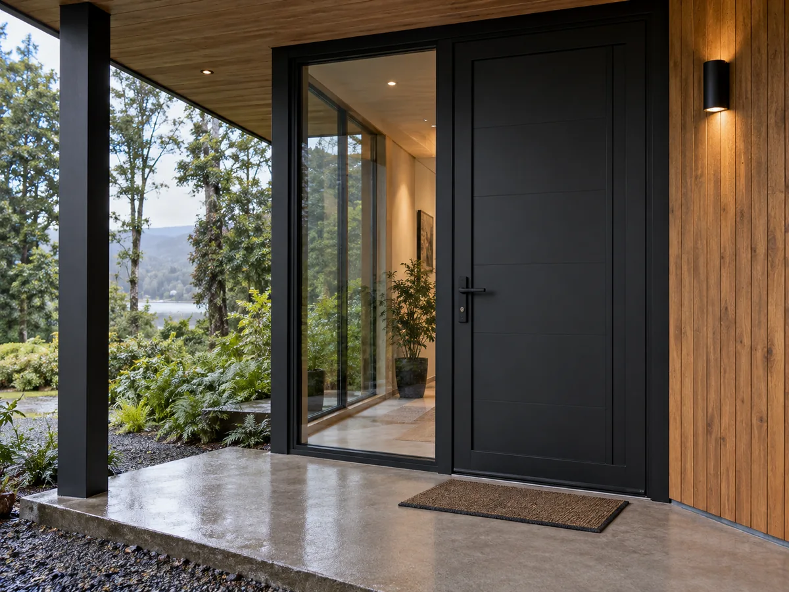
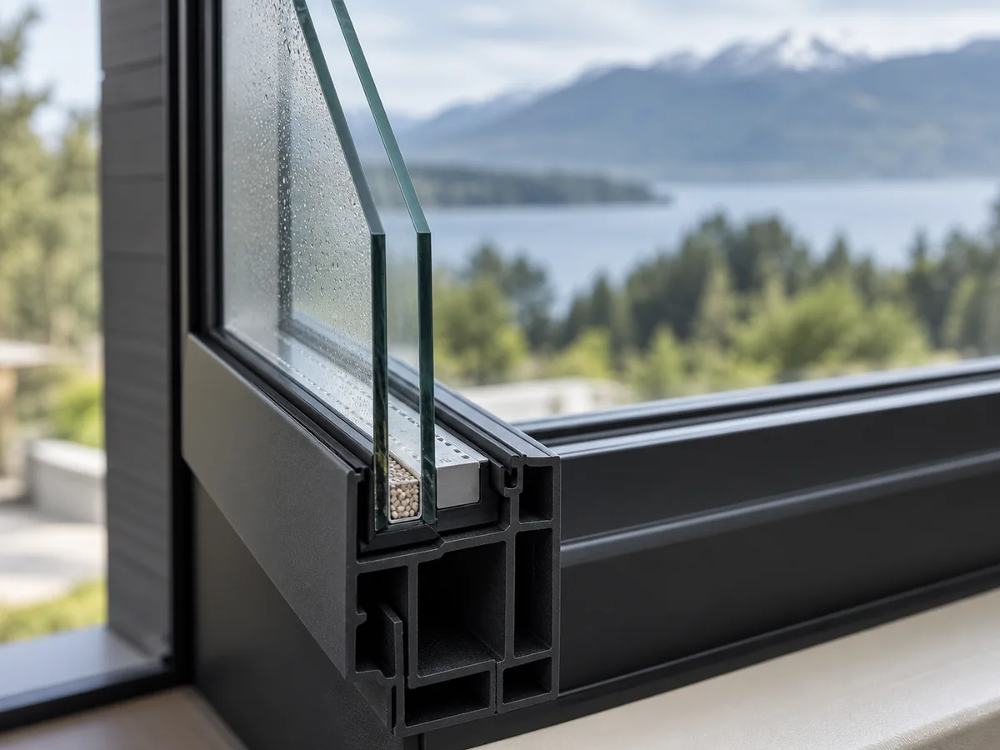
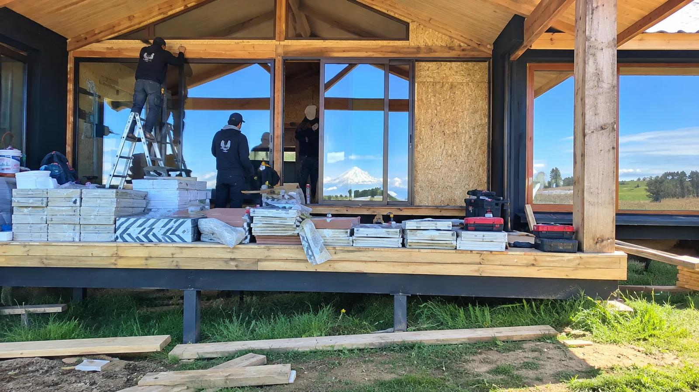

01A medida
Ventanas de PVC
Sistemas fijos, proyectantes y correderos para aprovechar mejor la luz, la ventilación y las vistas.
Cotizar ventanas ↗
Fabricación e instalación · Frutillar
Diseñamos y fabricamos soluciones en PVC y termopanel a la medida de tu vivienda, ampliación o proyecto comercial.
La ventana no es un detalle. Define la luz, el abrigo, el silencio y la forma en que se vive cada espacio.
En Vidriería C&M fabricamos ventanas y puertas de PVC, trabajamos con termopaneles y acompañamos cada decisión con atención personalizada.
Desde nuestro taller en Frutillar desarrollamos soluciones para obra nueva, ampliaciones, remodelaciones y reposición.
Producto, fabricación e instalación pensados como un solo proceso.

01Sistemas fijos, proyectantes y correderos para aprovechar mejor la luz, la ventilación y las vistas.
Cotizar ventanas ↗
02Accesos, puertas de terraza y paños vidriados fabricados según el vano y el uso del espacio.
Cotizar puertas ↗
03Soluciones de doble vidriado hermético orientadas a mejorar el confort térmico y acústico.
Cotizar termopanel ↗La configuración se define según orientación, tamaño, apertura y condiciones reales de cada proyecto.
El PVC y el termopanel ayudan a reducir el intercambio de temperatura cuando la solución está correctamente definida e instalada.
El doble vidriado y un cierre ajustado pueden disminuir el ingreso de ruido exterior.
Perfiles, sellos y herrajes trabajan en conjunto para proteger el interior del viento y la humedad.
Superficies durables y limpieza simple para acompañar el uso cotidiano.

El trabajo publicado por el equipo muestra fabricación, traslado e instalación en viviendas de Frutillar y distintos sectores del sur.
Alternativas para proyectos que priorizan hermeticidad, diseño, distintas aperturas y terminaciones cuidadas.
Partimos con información simple y avanzamos con definiciones claras.
Cuéntanos el tipo de obra, sector y medidas aproximadas.
Revisamos sistema, apertura, color, termopanel y montaje.
Producimos cada unidad según las especificaciones confirmadas.
Montamos, ajustamos y revisamos funcionamiento y terminaciones.
Frutillar · Frutillar Alto · Frutillar Bajo · Braunau · Purranque · Lago Ranco
Consulta disponibilidad de instalación para tu sector.Completa lo esencial y abriremos WhatsApp con tu solicitud preparada. Puedes adjuntar fotos o planos en la conversación.
Sí. Cada solución se fabrica según medidas, sistema de apertura, terminación y condiciones del proyecto.
Sí. Fabricamos e instalamos ventanas y puertas con termopanel para proyectos residenciales y comerciales.
Sí. Envía medidas aproximadas y fotos para recibir una primera orientación. La fabricación se define con información confirmada.
El equipo ha publicado trabajos en distintos sectores del sur. Consulta disponibilidad para tu ubicación al cotizar.